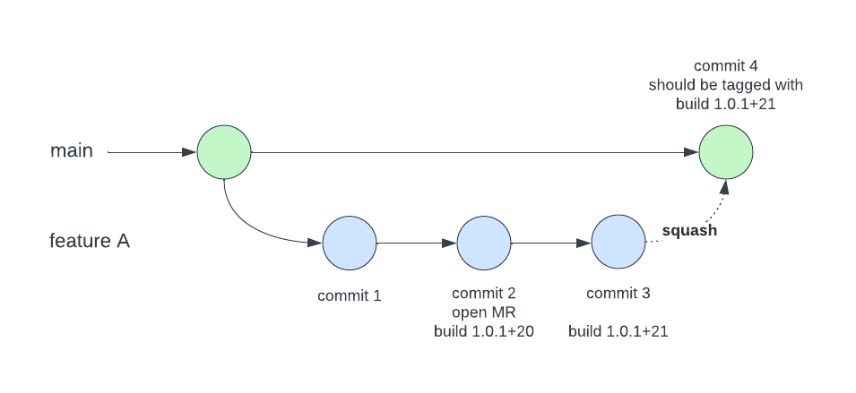

6. Squashing Commits#
Git is a version control system, used to explain and tell the story of your project’s development history. Sometimes, to avoid getting caught up in details, or to fix some bad commit history, we squash commits into one commit. Squashing commits is a technique used to simplify and clean up your commit history. This chapter will go through what it means to squash a commit, how to do it, and why it can be beneficial for your projects.

Image Source: https://www.atlassian.com/blog/it-teams/pull-request-merge-strategies-the-great-debate
6.1. What is Commit Squashing? And Why Do We Do It?#
To put in simple terms, commit squashing is the process of combining multiple commits into a single, cohesive commit.This comes in handy, and is often used, for cleaning up your commit history before merging a feature branch into a main branch.
By squashing commits, you can create a more streamlined and understandable history, which is easier to read and manage. The main branch just needs to know the point of the branch that is being merged into, not every detail of the development of that branch. Squashing commits is how we convey that one clear message.
So, why do we do this process? Don’t we want to know every detail of our commit history? In history class, we learn by learning about big events, not learning the granularity of experience that every single person who went through that event went through. By only focusing on big events, we can focus on a clearer history that is easier to break down and understand. We squash commits for the same reason.
Squashing commits makes the commit history more readable, speeds up review times, and the debugging processes. It also creates the logical grouping of related changes into a single commit, which gives the commit clearer context and purpose, rather than presenting incremental updates that are hard to follow. Another pro of squashing commits is that eliminating minor commits reduces noise in the history, focusing attention on significant changes and making the commit log more meaningful and navigable. And, for collaborative teams, squashing commits makes the development process smoother by preventing issues during branch merges and ensuring a more coherent history for easier collaboration.

Image Source: https://stackoverflow.com/questions/74446338/how-to-get-information-about-the-source-merge-request-in-a-squash-commit
6.2. How to Squash Commits#
As we’ve seen with Git, and with computer science in general, there are multiple approaches to do the same thing. We will go over two ways to squash commits! One with an interactive rebase, and the other with git reset.
Here’s how to do an interactive rebase: Identify the Commits to Squash: First, determine which commits you want to combine. Typically, this involves commits on a feature branch that you’ve been working on and want to clean up before merging.
Use An Interactive Rebase:
git rebase -i HEAD~number_of_commits
Replace number_of_commits with the number of commits you want to review. For example, if you want to squash the last 5 commits, use HEAD~5. Or you can use
git rebase -i 1ff9460~
You can use the commit sha from the git log to pick the commit up to where you want to squash, and the ~ after the commit hash tells the editor you’re using to include that commit as well as the history.
Choose the Commits to You Want to Squash: An editor will open showing a list of your commits. The commits are listed in chronological order, with the most recent commit at the bottom. Change the word pick to squash (or s) for all but the first commit you want to combine. Leave the top commit as pick.
Example:
pick e1a2b3c Initial commit
squash d4e5f6g Added cool new feature X
squash h7i8j9k Fixed annoying bug X
Write a Commit Message: After saving and closing the editor, Git will combine the selected commits. Another editor window will open to let you write a commit message for the squashed commit. You can edit the message to give the intention of the branch, or the intention of the squashed commits. You can look at our commit messages chapter to see some ways to write good commit messages!
Complete the Rebase: Save and close the editor. Git will complete the rebase process, and squash the selected commits into a single commit!
Force Push Changes: If you’re working with a remote repository, you’ll need to force-push your changes because squashing rewrites commit history:
git push --force-with-lease
If you don’t feel comfortable using editors, here is another approach that doesn’t require an editor, without interactive rebase. Here’s how to do it with git reset:
git reset --soft HEAD~number_of_commits_here
git commit -m "new commit message"
git push --force-with-lease
In the same way we can replace the number of commits in interactive rebases, or use the commit SHA, like we did in the earlier rebase. And in both cases, we use force with lease in both approaches, keeps your history and doesn’t overwrite anything, unlike git push -f.
6.3. When to Avoid Squashing Commits#
While squashing commits is useful, there are situations where it might not be what you or what your team needs for the project you’re working on. When you need to keep a detailed record of changes, like for debugging or tracking updates, avoid squashing commits. Also, don’t squash commits on branches that others are working on, as it can mess up the history and create conflicts for your team.
6.4. Conclusion#
Squashing commits is an essential part of using git to tell a more coherent story of your project history, and it’s important for collaborative teams to have a clear history to work together! This chapter was focused on using git on the command line, but if you want more information on using it on github desktop, check it out here: https://docs.github.com/en/desktop/managing-commits/squashing-commits-in-github-desktop.
Happy Coding!